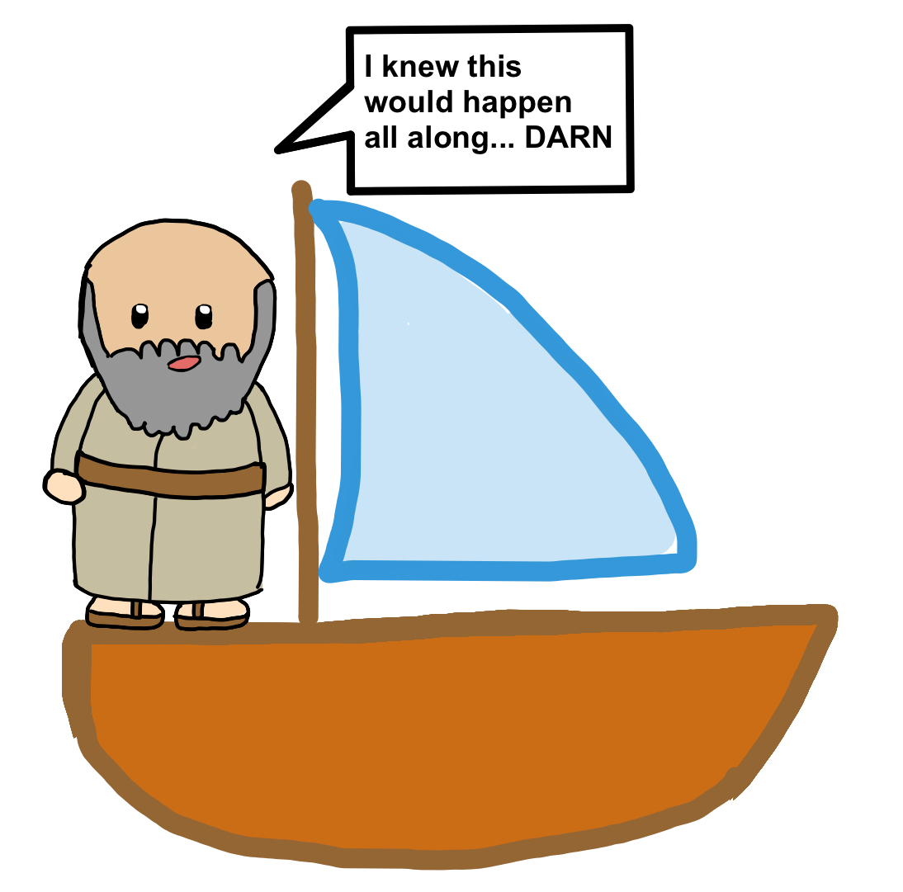

Paul and his Journeys in Acts Game
START YOUR ADVENTURE!
a)
b)
c)
d)
Good job!
You have successfully traveled with Paul, and have made it to the end! Hope you enjoyed :P
Hopefully Paul is proud of you lol
×

NEXT!